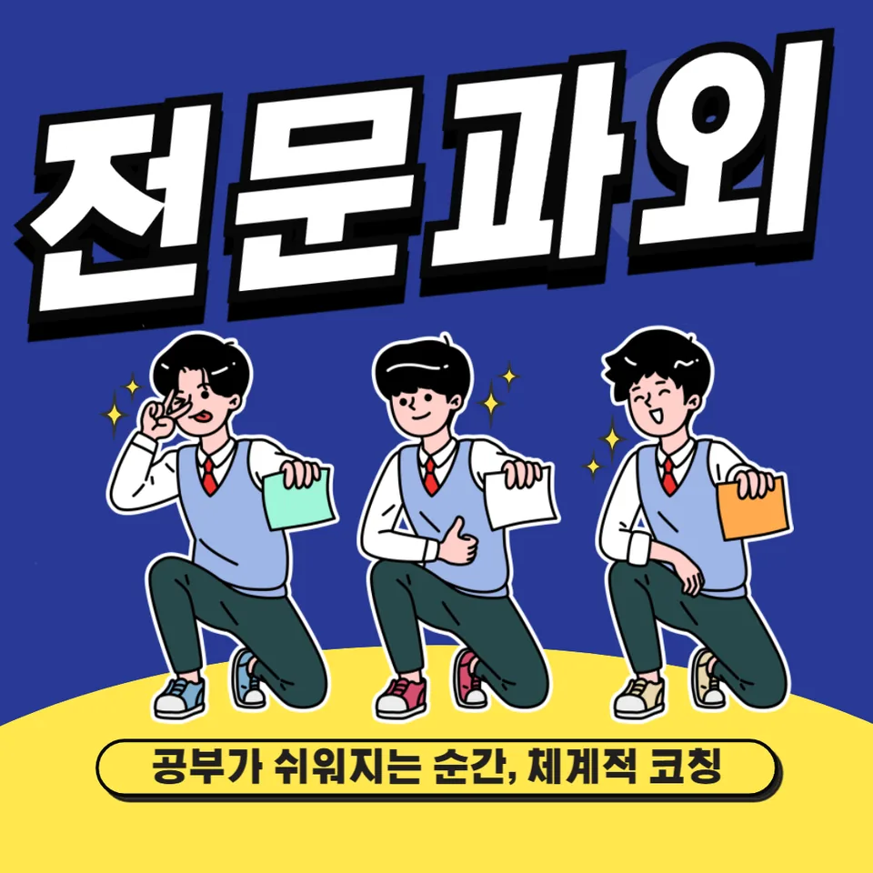

PageType : SUBJECT
URL : /경기도과외/수원시과외/권선구과외/당수동과외/당수동수학과외/
지역 교육환경이 수학 학습에 미치는 영향
당수동수학과외를 고려하는 학생들은 학교 수업 외에 학습 밀도를 조정하려는 경우가 많습니다. 주변 학원 분위기가 활발한 지역에서는 수학 공부가 “해야 하는 과목”에서 “계획을 세우면 해낼 수 있는 공부”로 인식되는 속도가 빨라집니다. 반대로 집에서 공부 시간을 확보하기 어려운 환경이라면, 같은 내용을 배우고도 복습 빈도가 낮아져 개념이 금방 흐려질 수 있습니다.
당수동수학과외에서는 지역의 학습 분위기를 단순히 흥미로만 보지 않고, 학생의 일상 리듬에 맞춘 학습 관리로 연결합니다. 등하교 시간, 주말 활용 방식, 동아리·학원 스케줄이 달라지면 수학 학습에서 가장 취약해지는 지점도 달라집니다. 대체로 시험 전에는 문제를 많이 풀지만, 일상에서는 개념을 복기할 시간이 부족해 오답이 누적되는 양상이 나타납니다.
학교의 수업 운영 방식도 체감 난이도에 영향을 줍니다. 당수동수학과외가 다루는 학생들은 수업 속도를 따라가려다 이해가 압축되는 순간을 겪고, 그 뒤에 시험 범위가 겹치면 부담이 급격히 커집니다. 이때 필요한 변화는 단순히 “더 풀기”가 아니라, 이해와 적용이 이어지는 순서를 유지하는 학습 흐름입니다.
학교별 평가 방식과 학습 방향
당수동수학과외를 찾는 학부모가 가장 자주 고민하는 지점은 평가의 결이 다르다는 점입니다. 같은 학교라도 학년이 올라가며 내신 비중과 수행평가 운영이 달라지고, 수학에서도 서술형이나 사고 과정이 드러나는 형태가 늘어나는 흐름을 보입니다. 이 변화는 계산 속도만으로는 성적이 안정적으로 이어지지 않는다는 신호로 받아들여집니다.
학생의 학습 방향이 흔들리는 순간은 보통 “시험 문제는 풀었는데 왜 점수가 다르게 나왔는지”가 생길 때입니다. 당수동수학과외에서는 풀이 결과보다 과정의 흔적을 정리하게 합니다. 수업에서 놓친 한 문장의 해석, 조건을 읽는 순서, 그래프나 표를 확인하는 습관 같은 요소가 채점 기준과 직접 연결되기 때문입니다.
또한 시험 기간의 학습 패턴은 평가 방식에 따라 달라집니다. 단원형 평가가 중심이면 단원별 정리와 반복이 우선이고, 혼합형이 강화되면 문제 유형 전환에 대비한 사고 흐름이 중요해집니다. 당수동수학과외는 이런 차이를 학생의 공부 루틴으로 번역해, 어떤 날 무엇을 점검해야 하는지 구체적으로 이어지게 만듭니다.
학생들이 수학을 어려워하는 주요 원인
당수동수학과외에서 관찰되는 대표적인 어려움은 “개념이 약한 상태로 다음 단원으로 이동”하는 구조입니다. 학생은 대체로 새로운 단원을 시작할 때까지는 이해가 되는 듯하다가, 곧바로 적용 문제에서 막힙니다. 이때 원인은 공식 자체보다, 전 단계에서 다뤄야 했던 관계를 눈여겨보지 못한 데 있습니다.
어휘와 해석도 자주 걸림돌이 됩니다. 문제에서 요구하는 행동이 무엇인지(비교, 추론, 조건 확인)를 놓치면 풀이가 진행되더라도 사고가 흐려집니다. 당수동수학과외는 이런 순간을 “문장 읽기”부터 다시 점검하며, 학생이 스스로 체크할 기준을 갖추도록 돕습니다.
오답의 형태도 원인을 말해줍니다. 계산 실수로만 보이는 문제에서 사실은 단위나 조건을 확인하는 습관이 흔들린 경우가 많고, 서술형에서는 자신의 생각을 정리하는 순서가 부족해 감점이 발생하기도 합니다. 학생이 어려움을 느끼는 시기는 대개 학기 중반과 평가 직전, 즉 압축 학습이 필요한 순간에 집중됩니다.
학년 변화에 따른 수학 학습의 차이
학년이 올라가면 수학 공부의 부담은 단순히 양이 늘어서가 아니라, 사고 요구가 달라져서 커집니다. 당수동수학과외를 통해 만나는 학생들은 중간중간 성취감을 느끼다가도, 상위 학년에서 “문제의 성격을 먼저 파악해야 하는 단계”로 넘어가면서 속도가 늦어지는 것을 경험합니다. 이때 필요한 것은 더 강한 문제집이 아니라, 문제를 읽고 구조를 잡는 감각을 체계화하는 것입니다.
학습 부담의 변화는 학교의 수업 속도와 평가 운영에서도 드러납니다. 시험 범위가 넓어지거나, 수행평가가 수업 과정과 연결되면 학생은 공부 시간을 분산시키며 관리해야 합니다. 당수동수학과외는 이런 분산을 감정으로 버티지 않게 하고, 주간 단위 계획으로 연결해 공부습관을 정리합니다.
또래 간 비교가 심해지는 시기에는 자신감이 흔들리기 쉽습니다. 학생은 잘하는 친구의 속도를 기준으로 자신의 이해 수준을 판단해 좌절할 수 있는데, 실제로는 같은 내용을 다르게 처리하고 있을 뿐인 경우가 많습니다. 그래서 학년 변화기에 당수동수학과외는 “성장 속도”를 기준으로 학습 과정을 설계합니다.
꾸준한 학습이 실력으로 이어지는 과정
당수동수학과외에서 반복해서 강조하는 핵심은 꾸준함이 결과를 자동으로 만드는 것이 아니라, 이해가 다음 학습으로 이어지게 해준다는 점입니다. 학생이 개념을 배운 날 바로 정리하지 못하면, 며칠 뒤에는 같은 표현이 다른 문제에서 등장할 때 낯설게 느껴집니다. 결국 공부의 어려움은 “문제를 못 푸는 상태”보다 “연결 고리가 끊긴 상태”에서 시작됩니다.
학습 과정은 대개 짧은 이해-부분 적용-오답 교정-복습으로 이어집니다. 이 연결이 끊기지 않도록, 당수동수학과외에서는 복습을 시험 직전 이벤트가 아니라 일상 루틴으로 고정합니다. 복습이 쌓이면 문제를 다시 보는 시간이 줄어들고, 사고가 더 빠르게 정리되는 경험이 누적됩니다.
시간을 효율적으로 쓰는 방법도 결국 반복에서 나옵니다. 같은 유형을 무작정 늘리기보다, 학생이 흔들리는 지점을 표준 체크리스트로 관리하면 공부 시간이 자연스럽게 정돈됩니다. 당수동수학과외는 “언제 무엇을 확인하는지”를 정해 시험 기간의 과부하를 줄이도록 돕습니다.
문제 해결력을 키우는 학습 습관
문제 해결은 정답을 맞히는 기술이기보다, 문제를 구조화하는 습관에서 자랍니다. 당수동수학과외에서는 학생이 문제를 처음 봤을 때 해야 할 질문을 정합니다. 조건은 무엇인지, 목표는 무엇인지, 이미 배운 개념과 어떤 방식으로 연결되는지 같은 점검이 선행되면 풀이가 흔들릴 확률이 줄어듭니다.
사고력이 자라는 과정은 “한 번에 완성”이 아니라 여러 번의 시행착오로 이어집니다. 학생이 막혔을 때 바로 답만 확인하면 기억은 남지만 사고는 자라지 않습니다. 대신 당수동수학과외에서는 막힌 이유를 분류하고, 같은 유형에서도 다른 지점에서 다시 시도하게 만듭니다. 그 결과 문제 해결 과정이 점차 안정화됩니다.
오답을 다루는 방식도 습관으로 바뀌면 달라집니다. 학생은 틀린 문제를 반복해서 풀면서도, 왜 틀렸는지 기록이 없으면 같은 실수가 계속 재현됩니다. 당수동수학과외는 오답 기록이 단순한 메모가 아니라, 다음 풀이에서 사용할 판단 기준이 되도록 설계합니다.
복습과 학습 관리가 중요한 이유
복습은 성적을 위한 마지막 단계가 아니라 이해를 지속시키는 장치입니다. 당수동수학과외를 받는 학생들 가운데 시험 기간에 성적이 흔들리는 경우는, 공부량보다 복습의 타이밍이 어긋나 있는 경우가 많습니다. 새로 배운 내용을 바로 다음 문제로 적용할 때는 되지만, 며칠 뒤에는 연결이 끊겨 다시 해석해야 하기 때문입니다.
학습 관리는 학생의 공부습관을 “감”에서 “기준”으로 바꾸는 과정입니다. 주간 계획을 세우고, 수업 후 최소 점검을 실행하며, 수행평가가 있다면 준비 일정을 앞당기는 식으로 흐름을 만듭니다. 학부모가 자주 느끼는 교육 고민도 여기서 정리됩니다. “무엇을 얼마나 시켜야 할지”의 불안을 줄이고, 학생이 스스로 점검하는 방식을 키우는 쪽으로 방향이 옮겨집니다.
특히 시험 기간에는 학습 패턴이 바뀝니다. 문제집을 늘리는 방식은 단기 성과를 줄 수 있지만, 복습이 약하면 다음 단원에서 다시 같은 어려움이 나타납니다. 당수동수학과외는 시험 전후의 전환도 학습 관리 안에 포함해, 공부가 끊기지 않게 이어집니다.
수학 학습에서 확인해야 할 핵심 요소
당수동수학과외에서 학습 성과를 가르는 핵심 요소는 학생이 자신의 상태를 확인하는 방식입니다. 개념을 이해하는지, 문제를 풀 때 어떤 판단을 했는지, 오답이 어떤 습관에서 비롯되는지 같은 점검이 있어야 공부가 누적됩니다. 아래 항목들은 단순한 체크리스트가 아니라 수학 학습 전반의 기준점이 됩니다.
- 학교 수업과 시험 범위에 맞는 학습 계획을 세우고 있는지 확인합니다.
- 개념을 암기하는 데 그치지 않고 문제 해결 과정에 활용하고 있는지 점검합니다.
- 틀린 문제를 다시 풀어보며 실수의 원인을 꾸준히 분석합니다.
- 단기 성과보다 지속적인 복습과 학습 습관을 유지하고 있는지 살펴봅니다.
또한 학생마다 성장 속도와 사고 흐름이 다릅니다. 같은 진도라도 어떤 학생은 이해 단계에서 확실해지고, 어떤 학생은 문제 풀이를 통해 개념이 고정됩니다. 당수동수학과외는 이런 차이를 부정하기보다, 학교 수업과 가정 공부가 같은 방향을 가리키게 정렬합니다.
자기주도학습이 자리 잡는 과정에서도 확인할 요소가 필요합니다. 처음에는 학습 계획이 작게 시작되지만, 시험이 다가올수록 계획을 지키는 경험이 늘어납니다. 그 과정에서 학생은 “공부는 해야 한다”가 아니라 “공부를 내가 관리한다”로 인식이 바뀌며, 자신감이 형성됩니다.
자주 묻는 질문
수학 학습은 언제부터 체계적으로 준비하는 것이 좋을까요?
단원 시작 직후와 시험 범위 확정 직전에 집중이 필요합니다. 수업 흐름이 바뀌는 시점에 당수동수학과외처럼 복습 루틴을 먼저 잡으면, 이후에 부담이 커져도 끊기지 않습니다.
학교 내신과 수행평가는 어떻게 함께 준비하면 좋을까요?
내신 준비는 개념-적용-오답 정리 순서로, 수행평가는 수업 과정에서 기록되는 요소를 중심으로 계획을 나눕니다. 두 준비를 같은 주간 안에 배치하면 학생이 공부를 분산해도 흔들림이 줄어듭니다.
수학 개념이 부족한 학생도 학습 흐름을 따라갈 수 있을까요?
가능합니다. 당장 새로운 내용을 밀어붙이기보다, 이전 단계에서 끊긴 연결 고리를 먼저 복구하면 됩니다. 그 뒤에 개념 활용 문제로 자연스럽게 이어지게 하면 학습 부담이 완화됩니다.
문제 해결력은 어떤 과정을 통해 향상될 수 있을까요?
문제를 푸는 횟수보다, 막힌 이유를 분류하고 다음 시도에서 판단 기준을 바꾸는 과정이 중요합니다. 당수동수학과외는 오답을 분석해 사고 습관을 정렬하는 방식으로 문제 해결력을 키웁니다.
꾸준한 학습 습관은 어떻게 만들어갈 수 있을까요?
일주일 단위로 작은 목표를 세우고, 매번 같은 순서로 복습과 점검을 반복하면 됩니다. 시험 기간에만 몰아서 공부하는 패턴이 아닌, 일상에서 복습이 이어지도록 공부습관을 고정해 나가면 됩니다.
